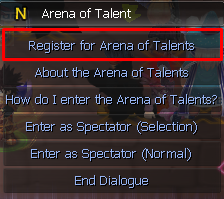
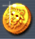

<div class="d-flex justify-content-center">
    <div class="badges">
        <h1 class="badges-title voidColor">Arena of Talents</h1>
        <div class="badge-content">
            <h2 class="voidSubTitle">What is Arena of Talents?</h2>
            <p>
                AoT is a gamemode where you can compete 3v3 with other players as a team.
            </p>

            <h2>Requirements</h2>
            <p>
                To be able to participate in AoT you need to be max level Prestige 9 Level 99 (+70)
            </p>

            <h2>How to Register</h2>
            <p>
                To register you need to locate <b>Arena of Talent NPC</b> that is found in the middle of Individual Arena and click on Register. <br/>
                To get there head over to Skill Info (K) click on Time Circle and Enter the Unlimited Individual Arena.
            </p>

            <br/>
            <br/>
             <br/>
        </div> <br/> <br/> <br/> <br/>

        <h1 class="badges-title voidColor">Arena of Talents Mechanics</h1>
        <div class="badge-content">
            <p>
                After registering and finding teams, you will choose the order in which you fight the enemy 1st, 2nd or 3rd.<br/>
                If the player on the first position loses, the heart next to his name will change colour to grey,<br/>
                the opposite team will gain a point and the next ally will be called to fight.<br/><br/>
                <b>NOTE:</b> the player who eliminated their opponent will remain fighting until they die.<br/><br/>
                The first team to get 3 points, therefore eliminating all opponents,<br/>
                wins the AoT and all participants will be teleported back to Individual Arena. <br/> <br/>

                The yellow circles are the amount of times you can call your allies for help for a short period of time, each team will get 5.<br/>
                <br/> 
            </p>
            
            <p>
                You can call for help by clicking on the boxes located at the bottom left side of your screen.<br/>
                The allies that lost a duel already, can still be called to help, as long as yellow circles are still available.<br/>
                With the camera icon you can view how your allies are currently doing.<br/>
                
            </p>
        </div> <br/> <br/> <br/> <br/>

        <h1 class="badges-title voidColor">Rewards</h1>
        <div class="badge-content">
            <p>
                For winning AoT: 3x Gold Medal <br/> 
                For losing AoT: 5x Silver Medal <br/> <br/>

                You can Exchange 12x Silver Medal for 1x Gold Medal at Talent Arena Coin [Exchange] NPC found in the middle of Individual Arena.<br/>
                
            </p>
        </div>
    </div>
</div>